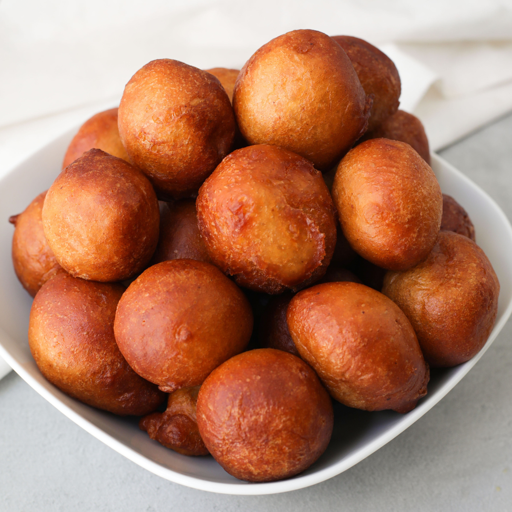

Puff-Puff Recipe

Description
Puff puff is a deep-fried dough. They are made from yeast dough, shaped into balls and deep-fried until golden
brown. It has a doughnut-like texture but slightly more chewy. It is a very common snack eaten by so many
countries but with different names and a little bit of variation in the mode of preparation.
ingridients For ten servings
- 2 cups flour
- 1¼ cups water
- 2 teaspoons yeast
- 1 teaspoon nutmeg
- ⅛ teaspoon salt
- ¼ cup sugar + 1 teaspoon sugar for proofing the yeast
- enough oil for deep frying
Steps
- Mix half of a cup of warm water, 1 teaspoon of sugar and the yeast in a bowl. Cover with a lid and set aside
until the yeast becomes bubbly. About 4-6 minutes.
- In another bowl, mix the dry ingredients – Flour, Sugar, Salt, and Nutmeg.
- Pour the proofed yeast and the remainng one cup water together with the dry ingredients and mix until the
batter is lump-free.
- Cover the dough and allow it to rise for 1 hour. (The risen dough has a distinct sweet smell, which will
make you know the dough is ready for frying)
- Preheat the oil in a pan deep and wide enough to accomodate the puff puff balls (about 360°F ) and scoop a
little bit of dough and drop the batter by spoonfuls into the oil.
- Fry both sides until golden brown. If you are finding it hard to turn the puff puff while frying you can
just press down the balls a little bit with your frying spoon before turning it.
- Remove from heat. Drain on a paper towel and enjoy while still hot or warm.